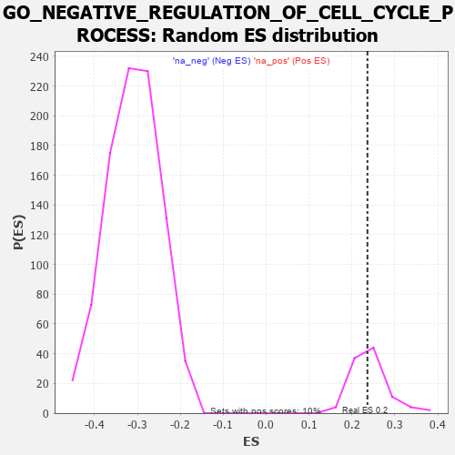

| | | Dataset | 7d |
| Phenotype | NoPhenotypeAvailable |
| Upregulated in class | na_pos |
| GeneSet | GO_NEGATIVE_REGULATION_OF_CELL_CYCLE_PROCESS |
| Enrichment Score (ES) | 0.23601781 |
| Normalized Enrichment Score (NES) | 0.9746216 |
| Nominal p-value | 0.5 |
| FDR q-value | 0.75711715 |
| FWER p-Value | 1.0 |
Table: GSEA Results Summary
 Fig 1: Enrichment plot: GO_NEGATIVE_REGULATION_OF_CELL_CYCLE_PROCESS
Fig 1: Enrichment plot: GO_NEGATIVE_REGULATION_OF_CELL_CYCLE_PROCESS
Profile of the Running ES Score & Positions of GeneSet Members on the Rank Ordered List
| PROBE | GENE SYMBOL | GENE_TITLE | RANK IN GENE LIST | RANK METRIC SCORE | RUNNING ES | CORE ENRICHMENT | | 1 | PCBP4 | | | 44 | 2.875 | 0.0481 | Yes |
| 2 | TEX14 | | | 164 | 1.179 | 0.0550 | Yes |
| 3 | BUB3 | | | 172 | 1.143 | 0.0755 | Yes |
| 4 | CNOT7 | | | 348 | 0.750 | 0.0673 | Yes |
| 5 | HUS1 | | | 362 | 0.735 | 0.0794 | Yes |
| 6 | CLSPN | | | 379 | 0.719 | 0.0908 | Yes |
| 7 | BAX | | | 387 | 0.711 | 0.1031 | Yes |
| 8 | NBN | | | 405 | 0.696 | 0.1140 | Yes |
| 9 | EED | | | 409 | 0.690 | 0.1265 | Yes |
| 10 | CNOT6 | | | 462 | 0.655 | 0.1321 | Yes |
| 11 | CDC20 | | | 480 | 0.644 | 0.1420 | Yes |
| 12 | CNOT2 | | | 514 | 0.625 | 0.1495 | Yes |
| 13 | CCNB1 | | | 581 | 0.601 | 0.1523 | Yes |
| 14 | RBL2 | | | 593 | 0.596 | 0.1621 | Yes |
| 15 | NDC80 | | | 616 | 0.590 | 0.1703 | Yes |
| 16 | MRE11 | | | 693 | 0.560 | 0.1711 | Yes |
| 17 | CDC6 | | | 709 | 0.557 | 0.1796 | Yes |
| 18 | RAD21 | | | 779 | 0.538 | 0.1809 | Yes |
| 19 | BLM | | | 804 | 0.531 | 0.1878 | Yes |
| 20 | RFWD3 | | | 843 | 0.521 | 0.1927 | Yes |
| 21 | RPA2 | | | 851 | 0.519 | 0.2015 | Yes |
| 22 | MEN1 | | | 1003 | 0.483 | 0.1913 | Yes |
| 23 | PSMG2 | | | 1018 | 0.480 | 0.1985 | Yes |
| 24 | RAD51 | | | 1090 | 0.466 | 0.1982 | Yes |
| 25 | RINT1 | | | 1110 | 0.462 | 0.2044 | Yes |
| 26 | PSMD7 | | | 1152 | 0.454 | 0.2077 | Yes |
| 27 | TFDP1 | | | 1180 | 0.450 | 0.2126 | Yes |
| 28 | PSMD2 | | | 1181 | 0.450 | 0.2210 | Yes |
| 29 | RBBP7 | | | 1220 | 0.443 | 0.2245 | Yes |
| 30 | CDC73 | | | 1265 | 0.436 | 0.2271 | Yes |
| 31 | CNOT3 | | | 1274 | 0.435 | 0.2342 | Yes |
| 32 | CARM1 | | | 1413 | 0.408 | 0.2243 | Yes |
| 33 | RBX1 | | | 1445 | 0.401 | 0.2278 | Yes |
| 34 | E2F4 | | | 1501 | 0.390 | 0.2281 | Yes |
| 35 | CDK4 | | | 1626 | 0.370 | 0.2193 | Yes |
| 36 | ORC1 | | | 1661 | 0.363 | 0.2217 | Yes |
| 37 | ESPL1 | | | 1734 | 0.349 | 0.2191 | Yes |
| 38 | MRNIP | | | 1743 | 0.346 | 0.2246 | Yes |
| 39 | WAPL | | | 1758 | 0.344 | 0.2292 | Yes |
| 40 | RAD17 | | | 1804 | 0.336 | 0.2298 | Yes |
| 41 | PSMD4 | | | 1811 | 0.335 | 0.2353 | Yes |
| 42 | PSMD6 | | | 1858 | 0.326 | 0.2355 | Yes |
| 43 | ZW10 | | | 1973 | 0.309 | 0.2268 | Yes |
| 44 | FOXO4 | | | 2004 | 0.304 | 0.2287 | Yes |
| 45 | BMP7 | | | 2107 | 0.290 | 0.2211 | Yes |
| 46 | JADE1 | | | 2141 | 0.286 | 0.2223 | Yes |
| 47 | PSME4 | | | 2143 | 0.285 | 0.2275 | Yes |
| 48 | DTL | | | 2154 | 0.284 | 0.2315 | Yes |
| 49 | CNOT4 | | | 2161 | 0.283 | 0.2360 | Yes |
| 50 | CDK2 | | | 2226 | 0.272 | 0.2330 | No |
| 51 | PSMF1 | | | 2251 | 0.268 | 0.2349 | No |
| 52 | MIF | | | 2357 | 0.252 | 0.2263 | No |
| 53 | KAT2B | | | 2502 | 0.226 | 0.2122 | No |
| 54 | CDT1 | | | 2505 | 0.226 | 0.2162 | No |
| 55 | RAD1 | | | 2528 | 0.223 | 0.2175 | No |
| 56 | PSMD5 | | | 2560 | 0.218 | 0.2177 | No |
| 57 | VPS4A | | | 2654 | 0.205 | 0.2097 | No |
| 58 | EPC1 | | | 2663 | 0.204 | 0.2125 | No |
| 59 | CUL1 | | | 2735 | 0.193 | 0.2071 | No |
| 60 | TPRA1 | | | 2745 | 0.192 | 0.2095 | No |
| 61 | BRD7 | | | 3018 | 0.147 | 0.1777 | No |
| 62 | YAF2 | | | 3032 | 0.145 | 0.1787 | No |
| 63 | FOXN3 | | | 3159 | 0.129 | 0.1651 | No |
| 64 | PSMD9 | | | 3179 | 0.125 | 0.1650 | No |
| 65 | FZR1 | | | 3205 | 0.122 | 0.1641 | No |
| 66 | CNOT1 | | | 3473 | 0.081 | 0.1317 | No |
| 67 | DMRT1 | | | 3546 | 0.068 | 0.1238 | No |
| 68 | LCMT1 | | | 3576 | 0.063 | 0.1213 | No |
| 69 | SKP1 | | | 3663 | 0.049 | 0.1113 | No |
| 70 | NEK2 | | | 3871 | 0.016 | 0.0853 | No |
| 71 | SYF2 | | | 4008 | -0.009 | 0.0682 | No |
| 72 | PCID2 | | | 4258 | -0.051 | 0.0375 | No |
| 73 | PSME3 | | | 4280 | -0.056 | 0.0359 | No |
| 74 | PINX1 | | | 4515 | -0.097 | 0.0080 | No |
| 75 | APC | | | 4558 | -0.107 | 0.0046 | No |
| 76 | TAOK3 | | | 4823 | -0.162 | -0.0259 | No |
| 77 | CBX3 | | | 4923 | -0.183 | -0.0351 | No |
| 78 | ATRX | | | 4929 | -0.184 | -0.0323 | No |
| 79 | SUZ12 | | | 4931 | -0.185 | -0.0289 | No |
| 80 | EP300 | | | 4941 | -0.186 | -0.0266 | No |
| 81 | PRKDC | | | 4955 | -0.189 | -0.0247 | No |
| 82 | KLF4 | | | 5005 | -0.198 | -0.0272 | No |
| 83 | ATM | | | 5210 | -0.249 | -0.0485 | No |
| 84 | PTEN | | | 5262 | -0.261 | -0.0501 | No |
| 85 | CDK1 | | | 5264 | -0.262 | -0.0453 | No |
| 86 | PSMD1 | | | 5674 | -0.367 | -0.0904 | No |
| 87 | RING1 | | | 5856 | -0.420 | -0.1056 | No |
| 88 | PCGF2 | | | 5943 | -0.451 | -0.1081 | No |
| 89 | CALR | | | 6077 | -0.499 | -0.1157 | No |
| 90 | PLK1 | | | 6082 | -0.500 | -0.1069 | No |
| 91 | TNKS | | | 6138 | -0.516 | -0.1042 | No |
| 92 | TFAP4 | | | 6254 | -0.556 | -0.1084 | No |
| 93 | MIIP | | | 6554 | -0.686 | -0.1336 | No |
| 94 | TPR | | | 6597 | -0.709 | -0.1257 | No |
| 95 | RBBP4 | | | 7123 | -1.010 | -0.1736 | No |
| 96 | CDK9 | | | 7266 | -1.138 | -0.1703 | No |
| 97 | OVOL1 | | | 7341 | -1.214 | -0.1571 | No |
| 98 | FBXL7 | | | 7380 | -1.245 | -0.1386 | No |
| 99 | CASP2 | | | 7442 | -1.322 | -0.1217 | No |
| 100 | MDM1 | | | 7691 | -1.742 | -0.1206 | No |
| 101 | PKD2 | | | 7822 | -2.167 | -0.0967 | No |
| 102 | PSMD3 | | | 7907 | -2.887 | -0.0534 | No |
| 103 | PSMD8 | | | 7931 | -3.286 | 0.0051 | No |
Table: GSEA details [plain text format]

Fig 2: GO_NEGATIVE_REGULATION_OF_CELL_CYCLE_PROCESS: Random ES distribution
Gene set null distribution of ES for GO_NEGATIVE_REGULATION_OF_CELL_CYCLE_PROCESS